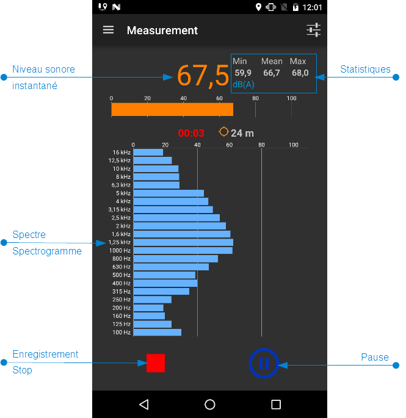
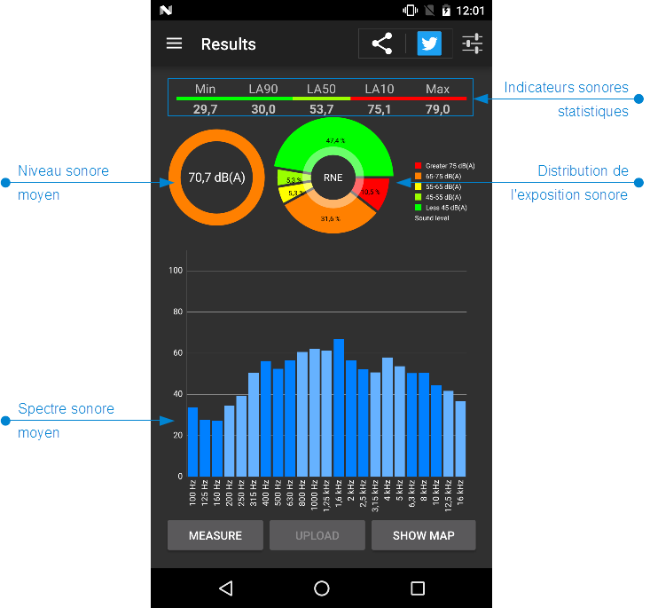

Présentation

NoiseCapture App est une application issue du projet de recherche européen ENERGIC-OD, développée conjointenent
par deux laboratoires de recherche français, le Laboratoire
d'Acoustique Environnementale de l'Ifsttar et l'équipe DECIDE du Lab-STICC du CNRS.
L'objectif du projet consiste à proposer une représentation cartographique de
l'environnement sonore, en mode participatif. A cet effet, les contributeurs disposent d'une
application sur smartphone, NoiseCapture App, leur permettant de réaliser des mesures de
bruit.
L'ensemble des mesures recueillies de manière anonyme est ensuite agrégé à l'échelle
de toute la communauté des contributeurs, puis traité de manière à produire des informations
pertinentes, sous
forme cartographique, consultables à partir d'une interface web. Le traitement est réalisé sur la
base de méthodes acoustiques, statistiques et géographiques.
NoiseCapture App : pour quel
utilisateur
?
NoiseCapture App est une application destinée avant tout à un public possédant un niveau
d'expertise
technique permettant de réaliser des mesures acoustiques dans un certain respect des
règles
de l'art, puis d'apporter un regard suffisamment critique sur les résultats fournis. Le profil
de
l'utilisateur peut être très divers, mais dans tous les cas il devrait disposer d'une certaine
«sensibilité» à la problématique des nuisances sonores dans l'environnement :
acousticien, technicien ou ingénieur (au sens
large) au sein d'une collectivité ou d'un bureau d'étude, professionnel de formation technique,
ou toute
personne ayant bénéficié d'une formation préliminaire à l'utilisation de l'application, par
exemple à l'occasion d'une NoiseCapture
Party.
NoiseCapture App peut bien entendu intéresser un public plus large, tout
en gardant à l'esprit la nécessité d'avoir un regard critique sur les résultats fournis par
l'application.
En quoi consiste une NoiseCapture
Party
?
Une NoiseCapture Party est un évènement, organisé sur un territoire et sur un temps
relativement court, visant à rassembler un grand nombre de contributeurs simultanément, soit
afin de contribuer significativement à l'élaboration d'une carte de bruit «participative»
sur une ville (une rue, un quartier, un lieu…), soit pour tester de nouvelles
fonctionnalités de l'application.
Une NoiseCapture Party doit dans la mesure du possible être encadrée par une ou
plusieurs personnes
disposant d'un niveau d'expertise permettant de transmettre les bonnes pratiques en matière
de mesure acoustique et au niveau de l'interprétation des résultats.
Déroulement
Le déroulement de la NoiseCapture Party et des consignes spécifiques vous seront
communiqués par les organisateurs. En complément, voici quelques consignes générales:
Utilisation de l'application
 Télécharger l'application NoiseCapture sur Google Play
(https://goo.gl/czMzjF ou flasher le QR
code
ci-contre pour un accès direct)
Télécharger l'application NoiseCapture sur Google Play
(https://goo.gl/czMzjF ou flasher le QR
code
ci-contre pour un accès direct)
- Si besoin, lire les informations localisées dans le menu « Aide » de
l'application
- Calibrer le smartphone (si cette possibilité est proposée lors de l'évênement)
- Réaliser des mesures de bruit, en suivant les informations complémentaires
proposées par les organisateurs


Recommandations pour les mesures
Quelques consignes pour une mesure pertinente:
- N'hésitez pas à vous déplacer (en marchant) pendant une même mesure, en essayant toutefois de ne pas ajouter
un bruit qui serait lié à votre déplacement (la mesure en deux-roues ou en voiture est à éviter).
- Si vous êtes dans un endroit plutôt calme, il est
conseillé de faire la mesure sans se déplacer, mais en changeant régulièrement de position.
- La durée d'une mesure est un point important: privilégiez une mesure sur une durée longue (plusieurs dizaines de seconde), que plusieurs mesures d'une durée courte.
Conseils pratiques pour la mesure:
- la mesure doit être réalisée en dehors des bâtiments
- Le smartphone ne doit pas être dans la poche
- Le smartphone doit être tenu à la main
- Le microphone du smartphone ne doit pas être masqué
- Réaliser une mesure de bruit, sans faire soi-même du bruit !
- Ne pas faire de mesure en période de pluie ou de vent
- Il est possible d'utiliser un microphone externe de meilleure qualité et calibré
Que faire en cas de problème ?
Si vous rencontrez des difficultés avec l'application, vous pouvez:
Visualiser les cartes
A partir de l'application, vous pouvez visualiser les points de mesure stockés dans la mémoire
du téléphone. Vous avez également la possibilité d'accéder à une carte communautaire, présentant
l'ensemble des contributions de tous les utilisateurs (de manière anonyme).
Dans ce dernier cas, vous pouvez aussi accéder à cette carte communautaire avec un navigateur internet depuis un ordinateur (solution conseillée pour un meilleur affichage) avec le
lien web suivant:
http://onomap.noise-planet.org/
Ressources